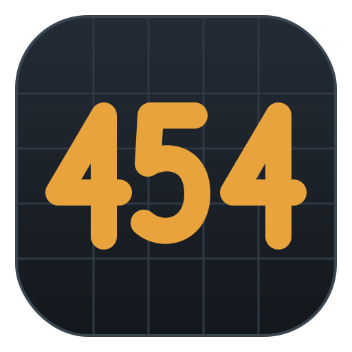
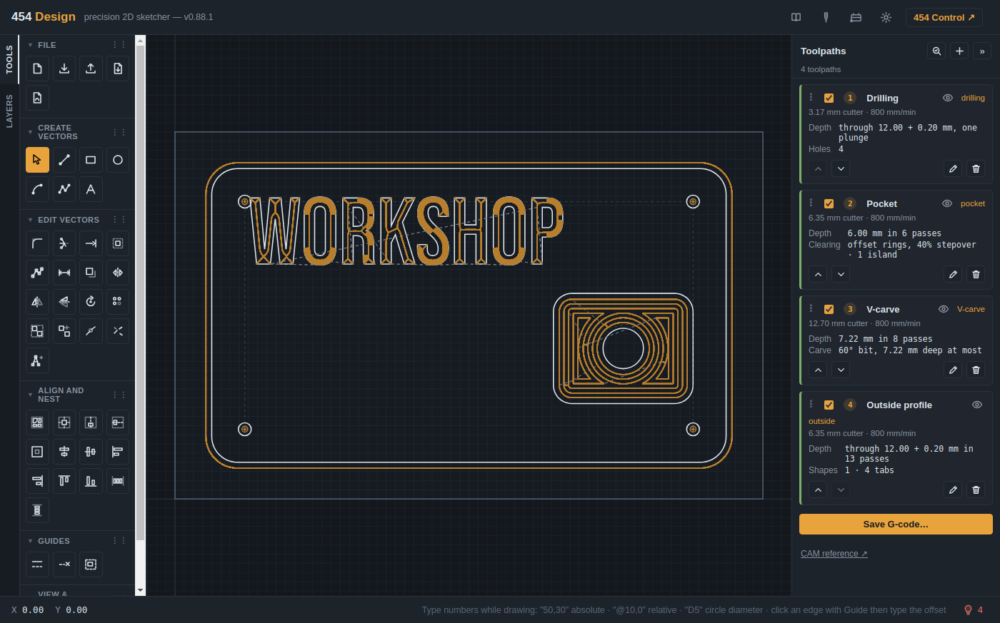

Why 454?
454 is a nod to my dad. He was a huge Chevy guy, and when I was five he bought a 1967 Corvette with a 454 big block in it. He's the one who taught me how to build things, so I named my making after his love for Chevy big blocks.

454 WorkshopDraw it, toolpath it, cut it. Beta
Free, open-source software for CNC routers running GRBL, like the Shapeoko and Nomad. Draw your parts and make their toolpaths in 454 Design, then run the machine with 454 Control, right in your browser.
This is beta software. It’s new, and the toolpaths especially are still being tested. Check every job before you cut it. What that means
A desktop app for Windows and Linux is in testing, and works without an internet connection. Follow it on GitHub.
Two apps that work together, from the first line of a drawing to the machine parking at the end of the job.


454 Workshop is new. It works, and it’s being used on real jobs, but it hasn’t had the years of use that established software has. The toolpaths in 454 Design are the newest part: testing them on real projects is still finding problems, which are fixed as they turn up.
So treat every job as one to check, especially one whose toolpaths 454 Design made.
A mistake in machine software doesn't just crash; it breaks a bit or ruins a part. So 454 is careful about the things that matter at the machine.
454 Workshop is free and open source under the MIT licence. There's no paid version and no account to make. If it's useful to you, you can support it on GitHub, and bug reports and ideas are always welcome.
A CNC router with a GRBL 1.1 controller, such as a Shapeoko or Nomad, and Chrome or Edge on Windows, macOS or Linux. Those browsers can talk to the machine over USB; others can't yet.
A CNC machine can hurt you. Check every job before you cut it: run it in the air first, keep a hand near the stop, and wear eye and ear protection.
454 is a nod to my dad. He was a huge Chevy guy, and when I was five he bought a 1967 Corvette with a 454 big block in it. He's the one who taught me how to build things, so I named my making after his love for Chevy big blocks.